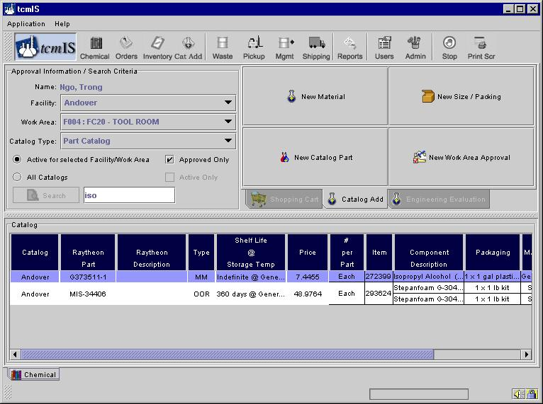
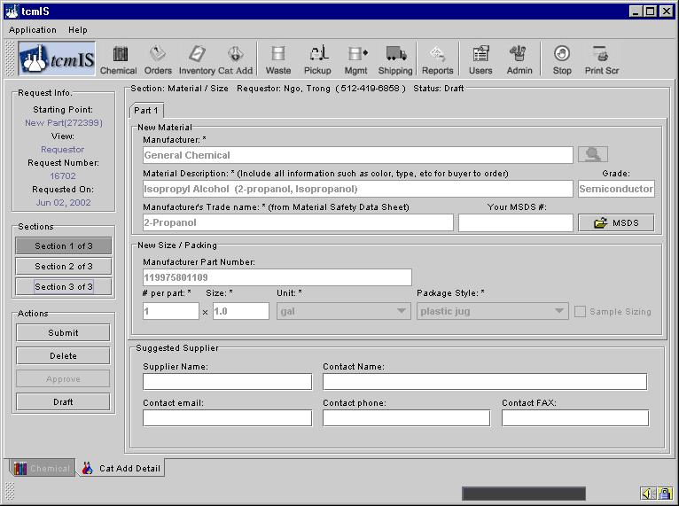
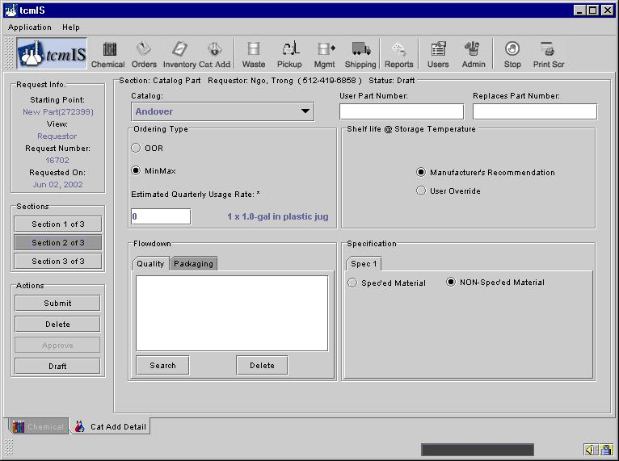
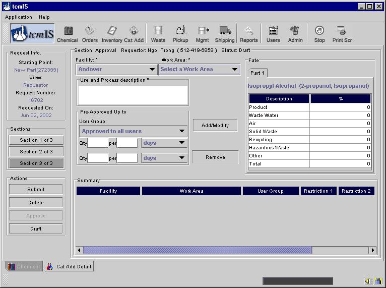
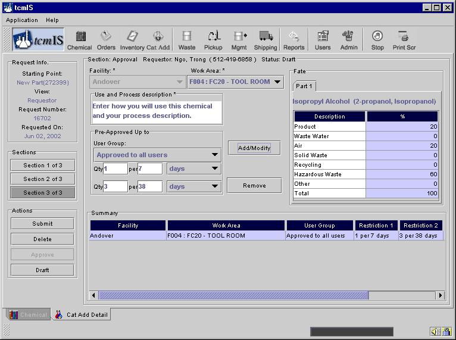
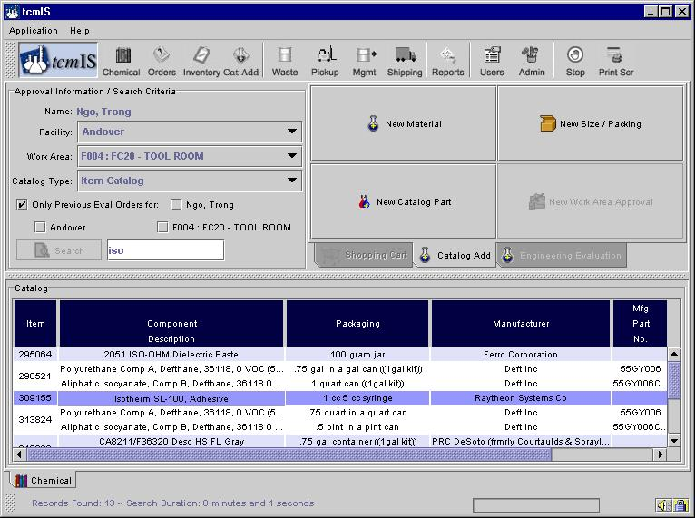

Adding to the Catalog or Requesting Permission to use Catalog Part.
If the chemical does not exist in the catalog or you are not approved to use it, you must use the Catalog Add options to add the item and/or use the material.
To begin this process click on the Catalog Add tab next to the shopping cart; Four buttons appear in the catalog Add area to facilitate your request as shown below.

If the part you desire is already in the catalog but not approved for your facility and work area click on the button "New Work Area Approval". If the manufactured item you desire is already in the catalog but defined under a part number with different specifications then those required for your work area click on the button "New Catalog Part". If the manufactured item you desire is in the catalog but with a different size than you require click on the button "New Size/Packaging". Finally, if there is no part defined in the catalog that is similar to the material you require click on the button "New Material".
By selecting the appropriate starting point tcmIS will advance to the catalog add request form while inheriting as much known information as possible regarding your request. For example, the screen below shows the initial section of the new catalog add form with information inherited from the "New Catalog Part" selection. Note that section 1 of this three section form contains information about the manufactured item which is completely inherited from the selected starting point (see below).

Section 2 contains information about this item pertaining to your facility, such as your internal part number and quality requirements.

Finally Section 3 describes information on the use and fate of this item by one or more work areas at your facility. As you enter information for a work area, selecting the "Add/Modify" button will store your information for your work area in the onscreen table allowing you to move to the next work area, as shown in the following two screens.


When you are ready click the "Submit" button which will route your request to the appropriate approvers. Upon final approval or rejection you will receive an email.
Alternatively, if the manufactured item is not contained in your part catalog by selecting the item catalog you have access to all items defined within tcmIS. This will allow you a wider selection of starting points (see below).
